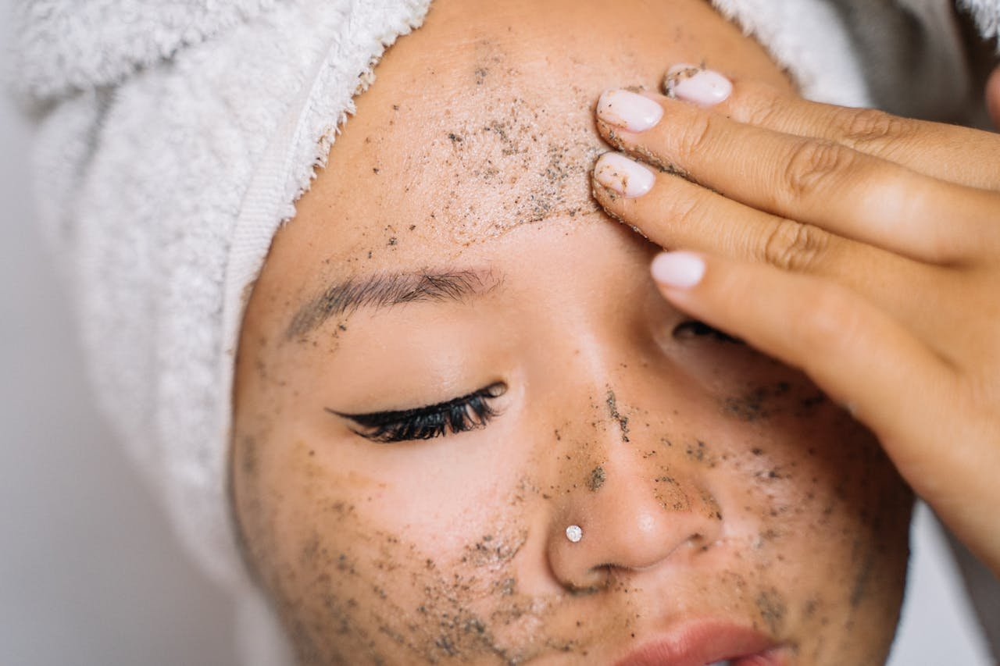

The Smart Way to Exfoliate Your Skin (2025)

Hadiyah Daché, licensed cosmetologist & esthetician
Skin Care Routines
6 min
← All articlesThe Book →Friendly reminder: this post contains affiliate links, which help support the Glowdega Archive. If you buy through them, I may earn a commission at no extra cost to you.
Originally published in 2017, updated March 2025.
Smooth complexions and softer skin don't just come from facial cleansers and moisturizers alone. Exfoliation is the secret weapon in your skincare arsenal that gives you that coveted glow by sloughing away dead skin cells from your skin's outermost surface.
There are two main types of exfoliation: mechanical (physical) and chemical. Each works differently but aims to achieve the same goal—revealing fresher, brighter skin beneath. Understanding which type works best for your specific skin condition can transform your skincare routine. Let's break down everything you need to know about modern exfoliation practices in 2025.
Understanding Exfoliation: What Happens to Your Skin
Exfoliation is the process of removing dead skin cells from the surface of your skin. Our bodies naturally shed these cells approximately every 30 days, but this process slows as we age. When dead skin cells accumulate, they can clog pores, make your skin appear dull, and prevent your other skincare products from properly penetrating the skin.
Regular exfoliation delivers multiple benefits:
Unclogs pores and prevents breakouts
Improves skin texture and tone
Enhances absorption of other skincare products
Stimulates cell turnover for a more youthful appearance
Boosts circulation for a natural glow
Mechanical Exfoliation: The Physical Approach
Mechanical (or physical) exfoliation involves using a physical agent to manually remove dead skin cells from the surface.
What it includes:
Scrubs with gentle particles (jojoba beads, rice powder, fine sugar)
Soft facial brushes
Gentle washcloths
Dermaplaning tools
Microdermabrasion
The landscape of mechanical exfoliation has evolved significantly in 2025. The harsh, jagged particles that once dominated scrubs have been largely replaced with smooth, biodegradable alternatives. Modern mechanical exfoliants often combine gentle physical elements with soothing ingredients to minimize irritation.
Best for:
Oilier skin types
Thicker skin
Removing flaky patches
Immediate results
Approach with caution if:
You have sensitive, thin, or inflamed skin
You have active acne lesions
You have rosacea or eczema
Your skin is sunburned or damaged
Chemical Exfoliation: The Dissolving Method
Chemical exfoliation uses acids or enzymes to dissolve the bonds between dead skin cells, allowing them to shed naturally. This approach has seen tremendous innovation and growing popularity in 2025's skincare trends.
Main types:
1. Alpha Hydroxy Acids (AHAs)
Glycolic acid (smallest molecule, penetrates deeply)
Lactic acid (more gentle, hydrating)
Mandelic acid (larger molecule, ideal for sensitive skin)
2. Beta Hydroxy Acids (BHAs)
Salicylic acid (oil-soluble, penetrates into pores)
Newer formulation like LHA (Lipo Hydroxy Acid) for gentler exfoliation
3. Poly Hydroxy Acids (PHAs)
The newest generation of chemical exfoliants
Larger molecules that don't penetrate as deeply
Gentler for sensitive skin
Examples: gluconolactone, lactobionic acid
4. Enzymes
Natural exfoliants from fruits like papaya (papain) and pineapple (bromelain)
Gentle enough for sensitive skin
Work like "little pac-men" to consume dead skin cells
Apply and let them work without rubbing
The Hybrid Approach: 2025's Exfoliation Innovation
The latest trend in 2025 is the combination approach—products that merge mechanical and chemical exfoliation methods with added benefits. These sophisticated formulations might include:
Gentle physical particles combined with mild AHAs or PHAs
Added antioxidants like Vitamin C for brightening effects
Hydrating ingredients to counter potential dryness
Anti-inflammatory components to soothe while exfoliating
This two-fold action delivers more comprehensive results while minimizing irritation, making these hybrid exfoliants suitable for nearly all skin types, including sensitive skin.
When Should You Exfoliate?
Frequency based on skin condition:
Dry or Sensitive Skin: 1-2 times per week maximum
Normal Skin: 2-3 times per week
Oily/Acneic Skin: Up to 3 times per week (not daily)
Mature Skin: 2-3 times per week with gentler formulations
Time of day considerations:
If you wear heavy makeup, nighttime exfoliation may provide the best results
If you tend to be oilier in the mornings, morning exfoliation might be more beneficial
Always apply sunscreen after morning exfoliation as your skin will be more sensitive to UV damage
Which Exfoliant is Best for Your Skin Condition?
For Acne-Prone Skin
Best Options:
BHA (salicylic acid) products to penetrate oil-clogged pores and Mandelic Acid (AHA) for exfoliation focused on your breakouts
Gentle enzyme exfoliants if skin is inflamed
Avoid harsh scrubs and brushes
For Hyperpigmentation and Uneven Tone
Best Options:
AHAs like glycolic acid (7-10% for home use), mandelic acid, and tranexamic acid
Products combining AHAs with brightening ingredients like arbutin and tyrosinase inhibitors like kojic acid
Consistent, gentle exfoliation rather than aggressive treatments
The key with hyperpigmentation is consistency rather than intensity. Regular gentle exfoliation over time yields better results than occasional intensive treatments that risk irritation.
For Sensitive, Reactive Skin
Best Options:
PHAs like gluconolactone (the gentlest acid option)
Enzyme exfoliants from papaya or pineapple
Products containing soothing ingredients like centella asiatica or ceramides
The beauty of modern exfoliants is that even sensitive skin can benefit from regular gentle exfoliation—look for "sensitive skin" formulations that include calming ingredients.
For Mature Skin with Fine Lines
Best Options:
Lower concentration AHAs combined with hydrating ingredients
Products containing both exfoliants and peptides or growth factors
Gentle enzyme treatments
Avoid harsh scrubs that can stretch aging skin
For mature skin, the best approach combines gentle cell turnover with ingredients that support collagen production. The 2025 approach focuses on "collagen banking"—consistent gentle treatments that maintain skin structure over time rather than aggressive approaches.
For Dry, Flaky Skin
Best Options:
Lactic acid (an AHA with hydrating properties)
PHAs combined with humectants like hyaluronic acid
Oil-based exfoliating balms
Avoid alcohol-based formulas
The key with dry skin is to exfoliate without compromising the skin barrier. Modern formulations combine exfoliating acids with oils and ceramides to maintain moisture balance.
Professional Chemical Peels in 2025
For those seeking more intensive treatment, professional chemical peels remain effective, but approaches have evolved:
More customized, multi-acid blends tailored to individual skin conditions
Focus on series of gentler treatments rather than single aggressive peels
Integration of LED therapy post-peel to enhance results and reduce recovery time
Pre- and post-care protocols that emphasize barrier repair
For the best results, professional chemical peel series typically last 4-6 weeks with a 6-12 week break between series. Your esthetician will suggest the right chemical peel regimen for your specific skin concerns.
Important: Do not attempt to perform your own chemical peel at home beyond the over-the-counter products designed for home use. The professional-grade products require trained application.
Best Practices for Safe Exfoliation
Start slowly - Begin with once-weekly exfoliation and gradually increase frequency as your skin adjusts
Less is more - Apply gentle pressure with mechanical exfoliants; let chemicals do their work without added friction
Watch for signs of over-exfoliation - Redness, tightness, increased sensitivity, or unusual shininess can indicate you're doing too much
Always follow with moisturizer - Replenish and protect your skin after exfoliation
Use sunscreen diligently - Recently exfoliated skin is more susceptible to UV damage
Don't combine too many actives - Avoid using retinol, vitamin C, or other potentially irritating actives on the same day as exfoliation
Consider your climate - You may need less exfoliation in dry, cold months and more in humid seasons
The Warning Signs of Over-Exfoliation
Over-exfoliation is the quickest way to damage your skin barrier. Signs you might be overdoing it include:
Unusual tightness or dryness
Increased sensitivity or stinging when applying products
Persistent redness
Flaking or peeling
Increased breakouts
Excessive shine without oiliness (indicates thinned skin)
If you notice these signs, take a break from exfoliation and focus on barrier repair with gentle, fragrance-free products containing ceramides, fatty acids, and soothing ingredients.
The Final Polish
Exfoliation is truly an art—finding the right balance for your unique skin condition takes some experimentation and awareness. The good news is that with the sophisticated formulations available in 2025, there's an ideal exfoliant for every skin condition and concern.
For personalized advice about which exfoliation method would work best for your specific skin concerns, book an appointment with us today. We can analyze your skin condition professionally and recommend a targeted exfoliation protocol that will help you achieve your skincare goals safely and effectively.
Remember: Beautiful skin isn't built in a day—consistent, appropriate exfoliation as part of a comprehensive skincare routine is the key to long-term skin health and radiance.